How Codly works
Codly keeps Typst’s syntax highlighting and builds a configurable layout around it. This guide follows the current implementation from source to output, so you can choose the right extension point when a theme or field is not enough. For writing rules and queries, see Querying and show rules.
From source to components
codly.new is an alias for the block element codly.codly.
It accepts raw content, a source string, or a resolved path. Strings and files
become block raw elements; filenames can supply a language and file badge.
Typst then produces raw.line values containing both plain text and highlighted
content.
Diagram source
flowchart TD
accTitle: From source to a Codly block
accDescr: Input becomes highlighted lines, optional syntax passes, displayed rows, components, and grid layout with reference metadata.
Input["Raw content, string, or path"] --> Block["codly.new: prepare source and resolve settings"]
Block --> Raw["Typst raw: syntax-highlighted raw.line values"]
Raw --> Passes["Optional diff, rainbow, and sublanguage passes"]
Passes --> Rows["Select source lines and build displayed rows"]
Rows --> Parts["Codly components: lines, numbers, badges, highlights, callouts"]
Parts --> Grid["Grid layout and optional geometry painting"]
Grid --> Output["Rendered block and reference metadata"]The components are Elembic custom elements.
Elembic validates fields, casts shorthand configuration values, and resolves
scoped set/show rules when elements are displayed. That is why
#show: codly.number-set_(...) can style numbers generated later by the block
renderer. Themes apply these same scoped rules, alongside raw
syntax and text styling.
Syntax passes reuse Typst
Codly does not implement another language parser. Extra highlighting features create auxiliary raw blocks and retain their highlighted lines:
- Sublanguages highlight each configured source range with its own language.
codly.sublang-blockstores those lines as metadata; the visible row receives the resolvedraw.linebefore its line show rule runs. - Rainbow delimiters use a private classification theme to distinguish code from strings and comments, then recolor eligible delimiters in the display content. Sublanguage ranges receive their own classification passes.
- Diffs (
diff-pyordiff,py, for example) create old and new source views for each hunk. Removed rows use old-side highlighting; added and context rows use new-side highlighting. The final block adds backgrounds and gutters once.
These passes can nest: a diff view can contain sublanguages and rainbow colors. Auxiliary blocks provide syntax data rather than extra visible listings. They can still appear in broad element queries, so a count of queried Codly or raw elements need not equal a count of visible listings.
Source lines become grid rows
The row builder applies ranges, skips, offsets, and unnumbered-line settings. It then inserts callout rows and constructs gutter, code, and optional annotation cells. Annotations can span rows; headers and footers span the columns.
Keep three coordinates separate:
| Coordinate | Used for |
|---|---|
| Source line, starting at 1 | Ranges, sublanguages, gutter arrays, callout attachment |
| Displayed number | Number labels and highlight line selection |
| Displayed row index, starting at 0 | Fill palettes and row callbacks, including generated rows |
Here the second source line displays as 102. Its gutter entry and callout use
source coordinates; its highlight uses the displayed number.
#import "@preview/codly:2.0.0" as codly
#codly.new(
```py
x = 1
print(x)
```,
offset: 100,
gutters: (auto, ("", "→")),
highlights: ((line: 102, start: 0, end: 5),),
callouts: ((line: 2, body: [The second source line.]),),
)Edit & run on your device
The highlighted source and output update after you stop typing. Copy code includes your edits.

A wrapped line remains one logical code row. Smart indentation formats its
continuations inside that row. Body backgrounds normally come from
codly.line; whole-line highlights take precedence over
diff backgrounds, which take precedence over the ordinary fill. Header and
footer components own their fills.
Layout, metadata, and references
For ordinary blocks, Typst lays out the grid directly. Outside gutters, indent guides, wrap markers, or edge padding use the geometry renderer: metadata marks cell and page-region boundaries, then painting uses their actual positions. This lets decorations follow wrapped rows and page breaks without laying out a second copy of the code.
Diagram source
flowchart TD
accTitle: Layout and metadata support decorations and references
accDescr: The grid supplies geometry marks for painting, hidden targets for references, and a compact block record for info and continued numbering.
Grid["Grid and code content"] --> Layout["Typst layout"]
Layout --> Bounds["Cell and region metadata"]
Bounds --> Paint["Paint fills, borders, guides, and wrap markers"]
Grid --> Anchors["Hidden native figure targets"]
Anchors --> References["Native references via Codly reference components"]
Grid --> Record["Block record: source count and last number"]
Record --> Info["codly.info and continued numbering"]Line, highlight, and annotation references use hidden native figure targets,
while codly.line-ref and the other reference
components format the resulting reference text. The enclosing figure label is
discovered automatically; an unlabeled inner figure stops that discovery.
codly.info reads the compact block record inside context.
Its lines field counts the full source, including omitted lines; last-number
tracks computed numbering. Passing a previous block’s label as offset uses
that record to continue numbering.
Finding an extension point
Start with public fields and themes for layout and appearance. Use component show rules for a badge, line, highlight, or reference; keep the original element in your result when you want its existing behavior. Query metadata for document inspection after layout.
For implementation work, field types, defaults, and descriptions live in
src/args.yaml.
src/declarations.typ
loads this metadata for the constructors, casts, and renderers in
codly.typ.
The row and block pipeline lives in
src/lib.typ, and the
position-based painting in
src/geometry.typ.
Fields and labels beginning with __ carry internal data and may change; build
customizations on the documented API.